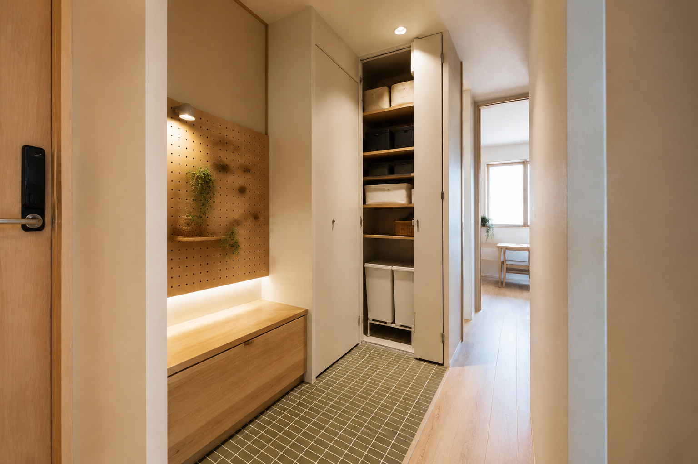
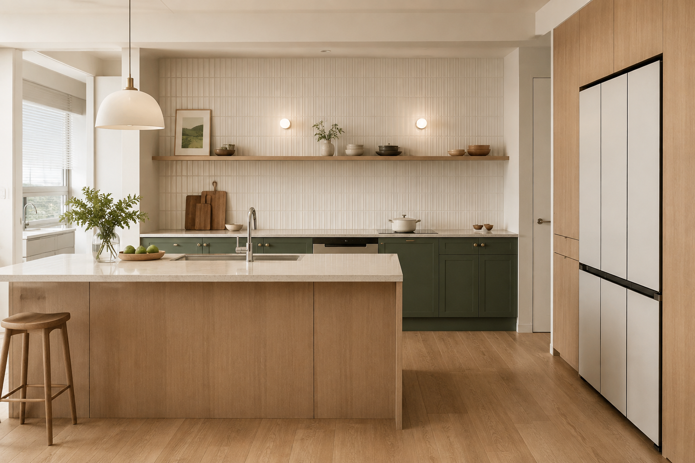
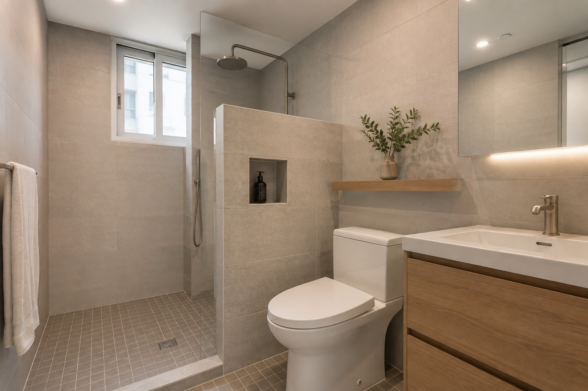

01 · ENTRANCE
앉고, 걸고, 감추는 현관
벤치와 타공판 조명을 두고, 깊은 팬트리는 시스템 선반으로 구성합니다. 긴 생활용품의 실제 높이도 먼저 잽니다.
현장 확인중문은 디자인을 나누지만 방풍·방음 효과가 큽니다. 생활 우선순위와 예산에 따라 설치 시점을 조절합니다.

DESIGN DIRECTION
이 집은 모든 방을 같은 강도로 꾸미지 않았습니다. 가족이 가장 오래 머무는 거실과 주방에 디자인과 예산을 집중하고, 침실과 드레스룸은 필요한 기능만 남겼습니다.
한 가지 포인트 컬러를 현관에서 주방까지 연결하고, 수납은 감추되 작업 동선은 짧게 만드는 것이 이 사례의 핵심입니다.
COLOR CONNECTION
현관 바닥의 그린 타일을 주방 하부장에 반복해 서로 떨어진 공간을 하나의 집처럼 연결합니다. 나머지 면은 아이보리와 자연스러운 목재 톤으로 눌러 컬러가 과해지지 않게 합니다.
ROOM BY ROOM

벤치와 타공판 조명을 두고, 깊은 팬트리는 시스템 선반으로 구성합니다. 긴 생활용품의 실제 높이도 먼저 잽니다.
현장 확인중문은 디자인을 나누지만 방풍·방음 효과가 큽니다. 생활 우선순위와 예산에 따라 설치 시점을 조절합니다.

냉장고와 아일랜드 사이에 문 열림과 작업 여유를 확보합니다. 상부장을 비운 벽은 질감 있는 타일로 마감합니다.
현장 확인냉장고 문 깊이, 아일랜드 서랍 인출, 두 사람이 교차할 폭을 제품 도면과 먹매김으로 확인합니다.
식사와 휴식이 겹치는 거실과 주방을 중심 공간으로 설정합니다. 장식을 늘리기보다 공용부의 색과 조명 완성도를 높입니다.
현장 확인기존 천장 단차와 구조 보를 철거 전에 구분하고, 벽면 돌출과 수직 오차는 마감 전 평탄화 범위를 협의합니다.

차분한 포세린 타일과 슬림 타일 파티션, 브러시드 니켈 수전으로 관리성과 따뜻한 분위기를 함께 잡습니다.
현장 확인바닥은 큰 규격보다 구배와 미끄럼 저항이 우선입니다. 배수 위치에 따라 벽과 바닥의 타일 규격을 다르게 선택합니다.
DETAIL CHOICE
슬림 문선은 깔끔한 선을 만들면서도 히든도어·무문선보다 목공 범위가 작아 비교적 현실적인 선택입니다. 히든도어와 무문선은 벽 전체 목공과 면 정리가 필요해 비용 차이가 큽니다.
DESIGN MEETS REALITYFIELD VARIABLES
시스템 창호 슬라이딩 창보다 같은 크기에서도 비용이 높아 현장 확인이 필요합니다.
천장 단차 구조 보인지 불필요한 조형인지 철거 후 판단하며 평탄화 비용이 생길 수 있습니다.
설비 누수 스프링클러와 상부 배관의 미세 누수는 관리사무소 협의가 우선입니다.
벽면 평활도 돌출과 휨이 크면 도배 전에 목공 또는 미장으로 면을 다시 잡습니다.
ROOM PICK NOTE
선호 사진에서 반복되는 색과 재료를 먼저 추출합니다.
모든 공간이 아니라 가족이 오래 머무는 곳에 디자인을 집중합니다.
가구 문과 서랍을 연 상태로 통로 폭을 검토합니다.
계약 전 확인하지 못한 조건은 예상 추가 항목으로 분리합니다.